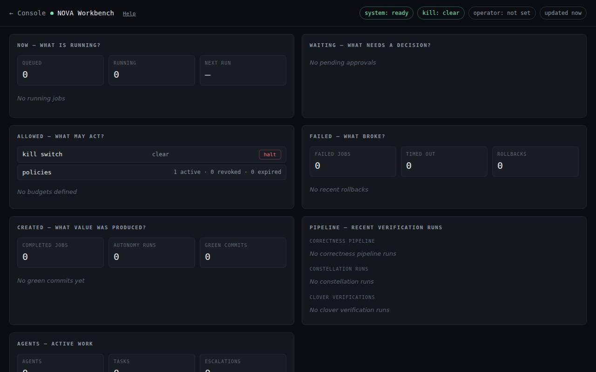
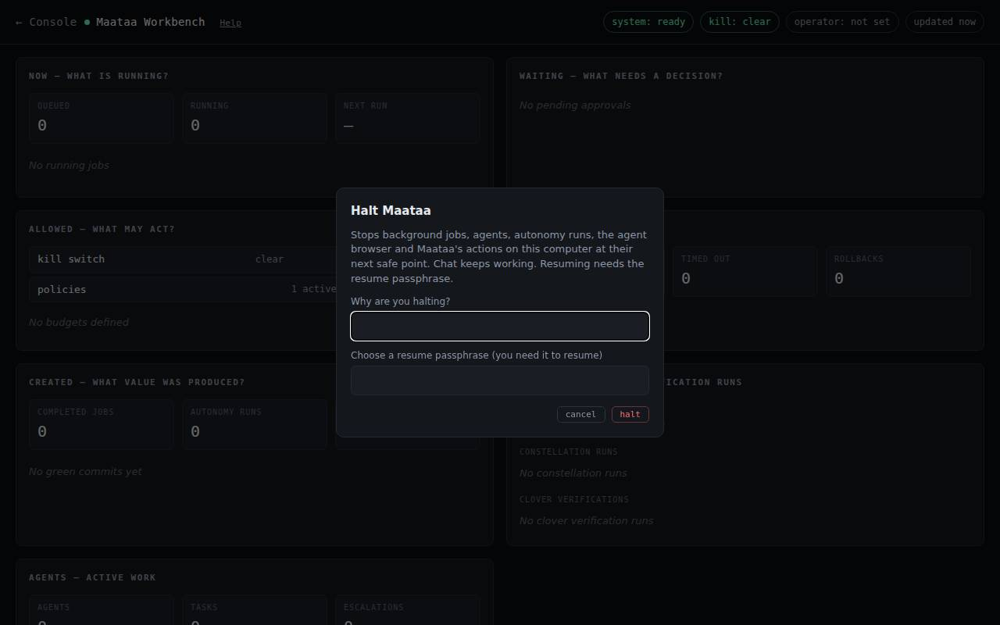

Workbench
One page that shows what NOVA is running, what is waiting for your decision, what it may do, what broke and what it produced, with the kill switch.
Workbench is the oversight page for NOVA's background work: jobs, agents, connectors and automatic fixes. Open it from Workbench in the sidebar, or click the status strip in the top bar. It refreshes every 3 seconds.

The status strip
The strip next to the setup pill reads like 0 · 0 · 0 · kill: clear · 0. In order:
- jobs queued
- jobs running
- items waiting for your decision
- the kill switch: clear, or HALTED in red
- jobs finished
Hover over it for the same numbers in words, and click it to open Workbench. The dot turns red when NOVA is halted or something needs attention.
The panels
| Panel | Question it answers | What you can do |
|---|---|---|
| Now | What is running? Queued and running jobs, and when the next one starts. | cancel a running job |
| Waiting | What needs a decision? | apply or discard a quarantined change; approve or deny a connector action; review a policy refusal |
| Allowed | What may act? The kill switch, policies (active, revoked, expired) and budget use. | halt or resume NOVA |
| Failed | What broke? Failed and timed-out jobs, and recent automatic rollbacks. | — |
| Created | What was produced? Finished jobs, known-good versions and approved autonomy runs. | — |
| Pipeline | Recent verification runs and their result. | — |
| Agents | Agents from the multi-agent system, their tasks, budgets and escalations. | — |
A panel that has nothing to show says so. On a new install most panels are empty until background work runs. See Built, not yet in the console for which parts of NOVA put work here today.
Your name in the audit trail
The first time you act in Workbench, NOVA asks for your name. It is written next to every decision (who cancelled, approved or halted, and why) and remembered on this computer. The operator pill shows it.
Approvals
- A quarantine is a change NOVA set aside instead of keeping, for example after an automatic fix failed its checks. apply keeps it; discard drops it.
- A connector action is something a connector wants to do outside NOVA, such as opening a pull request on GitHub, that its policy says needs a person. approve runs it once; deny refuses it.
- A policy denial is a record that a policy refused something in the last hour. It is there to read; nothing needs doing.
Every decision asks you to confirm, and is written to the audit log.
The kill switch
halt stops NOVA's background work at its next safe point:
- background jobs and autonomy runs
- agents in the multi-agent system
- the agent browser (it closes every open page)
- computer actions from chat (running commands, clicking, typing, changing files)
Chat itself keeps working, so you can still ask questions while NOVA is halted.

resume needs the resume passphrase, so something that halted NOVA cannot quietly undo it:
- The first time you halt (or resume), NOVA asks you to choose a passphrase of at least 6 characters.
- After that, resume asks for that passphrase and a reason.
NOVA keeps only a scrambled (hashed) copy of the passphrase, in the data folder. On a server you can set NOVA_RESUME_CREDENTIAL instead, before starting NOVA.